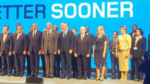
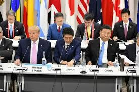
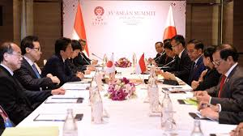
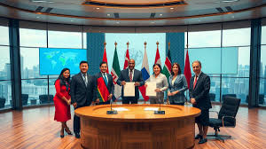
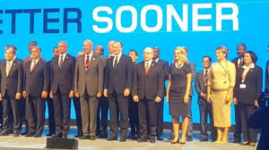
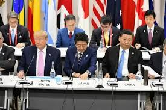
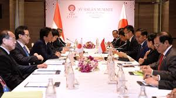
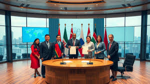
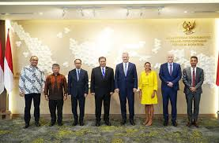
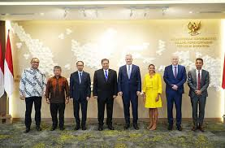

 

Pengertian:
Kerja sama multilateral merupakan kerja sama yang dilakukan dua negara atau lebih dengan lembaga internasional. Kerja sama multilateral umumnya hanya mengatur hal - hal yang menyangkut kepentingan umum dan bersifat terbuka dan tidak dirahasiakan seperti kerja sama pemerintahan pada umumnya. Kerja sama multilateral yang melibati Indonesia kurang lebih ada sekitar 15 kerja sama.
Contoh:
Beberapa contohnya adalah kerja sama multilateral Indonesia pada bidang ekonomi seperti World Trade ORganization ( WTO ) yang memiliki tugas untuk menata serta memfasilitasi lalu lintas perdagangan antar negara, selain itu WTO harus mengatasi perselisihan perdagangan antar negara. Selain WTO ada juga ( IMF ) International Monetary Fund yang bertujuan untuk menciptakan stabilitas dalam sistem keuangan secara internasional.
Peran Indonesia dalam kerjasama:
Peranan Indonesia dalam kerja sama multilateral juga bukan sedikit contoh termudahnya adalah WTO. Pada WTO Indonesia membantu merundingkan pembangunan - pembangunan yang akan dilangsungkan di Doha, posisi Indonesia adalah untuk berfokus pada kepentingan nasional guna untuk mendorong pengentasan kemiskinan serta perubahan ekonomi.
Peran Indonesia dalam ILO adalah untuk memberikan sumbangan pemikiran dan tindakan untuk mengatasi masalah perburuhan di dunia. Selain itu Indonesia juga sedang berusaha untuk bekerja sama dengan ILO untuk melindungi para pekerja perempuan dengan cara penyesuaian terhadap standar - standar internasional dan pelaksanaan program bersama, namun sayangnya kerja sama yang dilakukan belum efektif karena belum memenuhi keempat indikator dan konsep Decent Work.
Yang terakhir yaitu peran Indonesia dalam FAO. Dalam Fao, Indonesia memiliki peran penting yaitu untuk mengarahkan kebijakan dan perkembangan sistem pangan secara global. Di saat yang bersamaan Indonesia juga perlu mencontohkan kemampuannya dalam meningkatkan ketahanan pangan, termasuk melalui dukungan untuk perdagangan pangan secara global.
Apa yang didapat Indonesia dari kerjasama?
Dampak kerja sama WTO terhadap Indonesia meliputi proteksi dan potensi dalam perdagangan. WTO menjamin terciptanya lapangan pekerjaan, serta meningkatkan produksi dan perdagangan di Indonesia. Selain itu WTO juga mengoptimalkan sumber daya alam yang sudah dimiliki oleh Indonesia.
Dengan adanya kerja sama dengan organisasi ILO Indonesia mendapatkan dampak positif berupa tenaga kerja di dalam Indonesia yang bisa mendapatkan bantuan, solusi serta pendampingan dari organisasi ILO itu sendiri untuk mengatasi masalah - masalah yang sedang dialami oleh negara masing - masing.
Dampak kerja sama Indonesia dengan organisasi FAO yang bertujuan untuk membantu dan memberi dorongan bagi negara - negara yang masih didalam proses berkembang adalah membantu dalam melaksanakan segala proses - proses yang bisa dikatakan rinci seperti proses pembangunan infrastruktur di negara Indonesia yang dibantu oleh organisasi - organisasi atau dengan impor barang dari negara - negara yang lain.